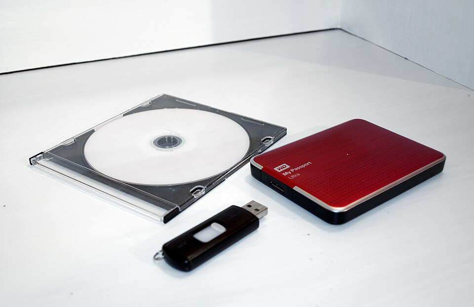

0️⃣
Бит
Один разряд двоичного представления: 0 или 1.
Мы уже умеем измерять информацию в битах и байтах. Теперь научимся вычислять объём сообщений, переводить единицы и проверять, хватит ли памяти для хранения данных.
Компьютер представляет цифровые данные двоичными последовательностями. Каждый 0 или 1 — один двоичный разряд, или бит. В одном байте — восемь битов. Сегодня мы используем эти знания для более сложных вычислений.
Один разряд двоичного представления: 0 или 1.
Единица измерения, равная 8 битам.
Узнать, сколько данных представлено, и выразить объём в удобной единице.
Сколько битов в 2 байтах? Сколько байтов в 32 битах? Если ответил 16 бит и 4 байта, можно идти дальше.
Информационный объём данных — количество битов или байтов, необходимое для их цифрового представления. Он помогает определить, сколько места потребуется для хранения этих данных.
Очень короткое предупреждение может быть чрезвычайно важным. Значение сообщения для человека не определяется количеством его битов.
Здесь записано 16 бит = 2 байта. Объём вычисляется по количеству двоичных разрядов, а не по важности сообщения.
Смысл отвечает на вопрос «Что сообщается?», а информационный объём — «Сколько данных занимает цифровое представление?». Один смысл может кодироваться разными способами.
Если дана двоичная последовательность, достаточно подсчитать её разряды. Каждый символ 0 или 1 занимает один бит.
8 бит : 8 = 1 байт
16 бит : 8 = 2 байта
Чтобы перейти от битов к байтам — делим на 8. Чтобы перейти от байтов к битам — умножаем на 8.
Для больших объёмов данных удобнее использовать более крупные единицы. В наших учебных задачах действуют двоичные соотношения с числом 1024.
Компьютеры используют двоичную систему счисления. Число 1024 = 2¹⁰, поэтому оно удобно для двоичных расчётов.
В соседних единицах от байта к килобайту и выше используем × 1024 или ÷ 1024. Между байтом и битом — × 8 или ÷ 8.
В учебнике мы используем привычные школьные обозначения Кбайт, Мбайт и соотношение 1024. В современной технике различают десятичные и двоичные кратные единицы, но для задач этого урока придерживаемся указанных равенств.
Одно и то же количество данных можно выразить разными числами: например, 2 Кбайта = 2048 байтов. При переходе к меньшим единицам число увеличивается, а к большим — уменьшается.
Единица стала меньше, поэтому числовое значение выросло.
Единица стала больше, поэтому числовое значение уменьшилось.
Нужно определить, сколько битов в 2 Кбайтах. Сначала получим байты, затем биты.
Полный ответ: 2 × 1024 × 8 = 16 384 бита.
В 1 Кбайте больше одного байта, поэтому количество байтов в 3 Кбайтах должно быть больше трёх. Если получилось меньше, вероятно, перепутано умножение и деление.
Нельзя сравнивать только числа и игнорировать единицы измерения. Например, 1 Кбайт больше 900 байтов, хотя число 1 меньше числа 900.
Переведём первую величину: 1 Кбайт = 1024 байта.
1 Кбайт = 1024 Б Другое количество данныхПереведём первую величину: 2 Кбайта = 2048 байтов.
2 Кбайта = 2048 Б Другое количество данных1. Выбери общую единицу. 2. Переведи в неё обе величины. 3. Сравни числа. 4. Если нужно, вычисли разницу.
Мы уже знакомились с двоичным кодированием текста. Если каждый символ кодируется одинаковым количеством битов, объём сообщения можно найти умножением.
V — объём в битах; N — число символов; i — число битов на один символ.
В нём 4 символа, включая восклицательный знак. По условию задачи на каждый символ приходится 8 бит.
8 бит
1 символ
8 бит
1 символ
8 бит
1 символ
8 бит
1 символ
Знак «!» тоже учитывается как символ.
В реальных системах символы не обязаны занимать по одному байту. Здесь мы специально предполагаем фиксированную длину кода — 8 бит на символ. Пробелы и знаки препинания тоже считаются символами, если условие не говорит обратного.
Необязательно пересчитывать каждый символ вручную. Если известно число строк и число символов в каждой строке, можно вычислить их общее количество.
В каждой строке 40 символов. По условию каждый символ представлен 1 байтом; символы перевода строки не учитываем.
Каждая полоска — одна строка; число штрихов условное, не точное изображение 40 символов.
a — число строк; b — число символов в строке.
Пример рассчитан по условиям школьной задачи. Мы не учитываем дополнительные служебные данные и считаем, что в каждой строке ровно 40 символов.
Когда сообщений несколько, их объёмы складываются. Если все сообщения одинаковые, проще умножить объём одного на их количество.
Пусть одно сообщение занимает 256 байтов, а другое — 1 Кбайт.
256 Б + 1024 Б = 1280 Б
Сначала перевели величины в одинаковые единицы, затем сложили.
При решении таких задач мы складываем только указанные объёмы сообщений. Если условие дополнительно не задаёт служебную информацию, её не учитываем.
Общий принцип: сначала привести к единой единице, затем выполнить действие .
Память устройства имеет определённую вместимость. Чтобы узнать, хватит ли места для данных, нужно сравнить их объём с доступной памятью.
Нужно сохранить данные объёмом 3072 байта. Хватит ли места и сколько останется?
Нужно разместить 4 сообщения по 700 байтов .
Все четыре сообщения помещаются. Остаётся 272 байта.

В наших расчётах учитываем только предоставленное свободное место и заданный объём данных. В реальной системе могут использоваться дополнительные служебные данные, но в этом уроке их вычисление не требуется.
Посмотри, какую последовательность действий выбирают в задачах разных видов. Ответ обязательно записывай с единицей измерения.
5 × 1024 = 5120
Ответ: 5120 байтов.
2 × 1024 = 2048 Б
2048 × 8 = 16 384 бит
Ответ: 16 384 бита.
48 × 8 = 384 бита
384 : 8 = 48 Б
Ответ: 384 бита, или 48 байтов.
2 × 1024 = 2048 Б
2048 − 2000 = 48 Б
Ответ: 2 Кбайта больше на 48 байтов.
3 × 1024 = 3072 Б
4 × 700 = 2800 Б
3072 − 2800 = 272 Б
Ответ: хватит, останется 272 байта.
Ответь на вопросы своими словами. Для вычислительных вопросов опирайся на схемы и разобранные примеры.
Что называют информационным объёмом данных?
Чем информационный объём сообщения отличается от его смысла и полезности?
Как определить информационный объём двоичной последовательности?
Сколько битов содержится в одном байте?
Какие единицы используют для измерения больших объёмов данных?
Почему число 1024 используется в изученных переводах единиц?
Как перевести килобайты в байты?
Как перевести биты в байты?
Почему перед сравнением объёмов их приводят к одной единице?
От чего зависит объём текста, если все символы имеют коды одинаковой длины?
Как вычислить суммарный объём нескольких сообщений?
Как проверить, хватит ли свободной памяти для размещения данных?
На прошлом уроке мы познакомились с единицами измерения информации. Сегодня использовали их, чтобы находить объём цифровых сообщений, сравнивать величины и определять, сколько свободной памяти потребуется.
Считаем биты, байты и объём сообщения по длине кода.
Переходим между единицами и сравниваем величины корректно.
Определяем, поместятся ли данные в доступной памяти.
Информационный объём — измеряемая характеристика цифровых данных. Чтобы решить задачу, важно учитывать способ кодирования, верно выбирать единицы измерения и проверять расчёты.